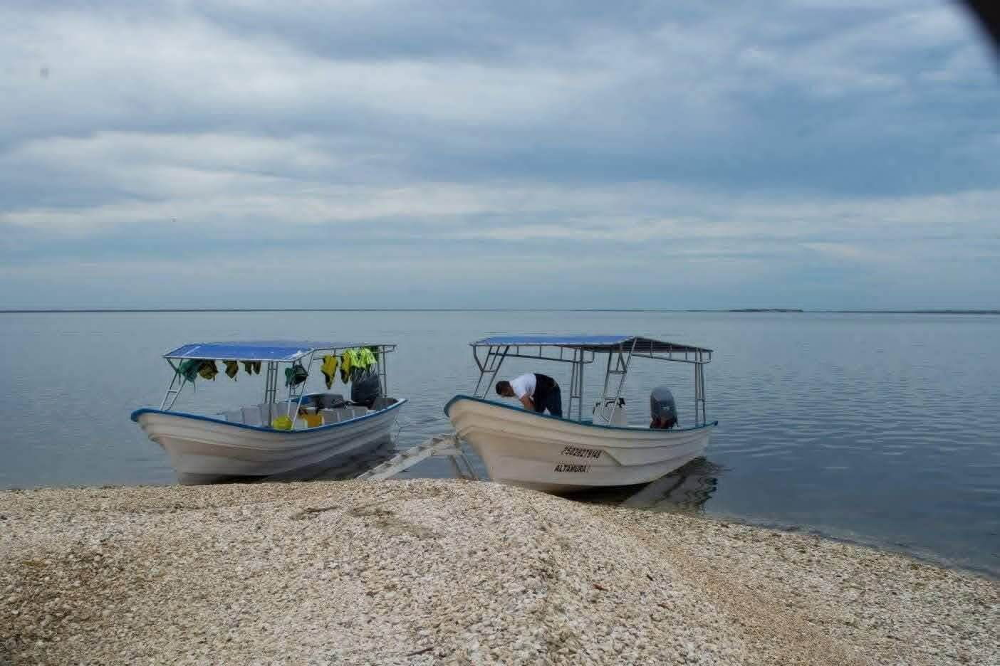
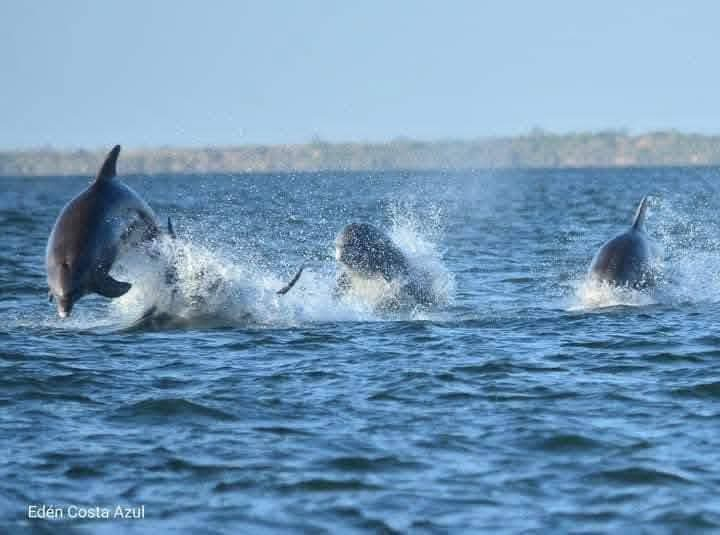
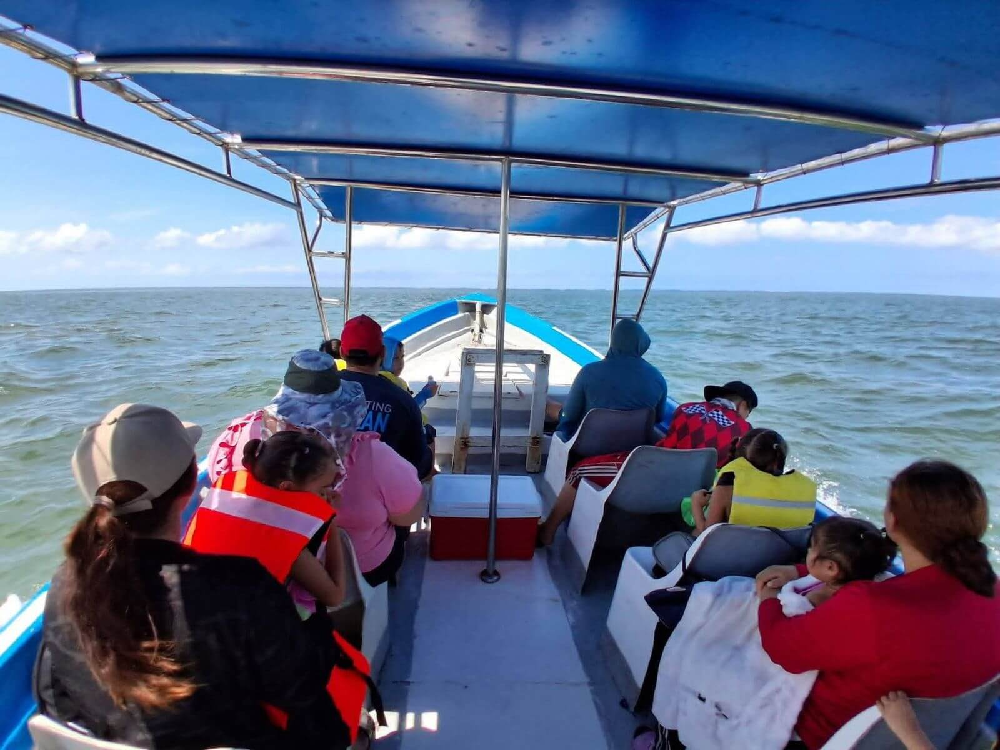
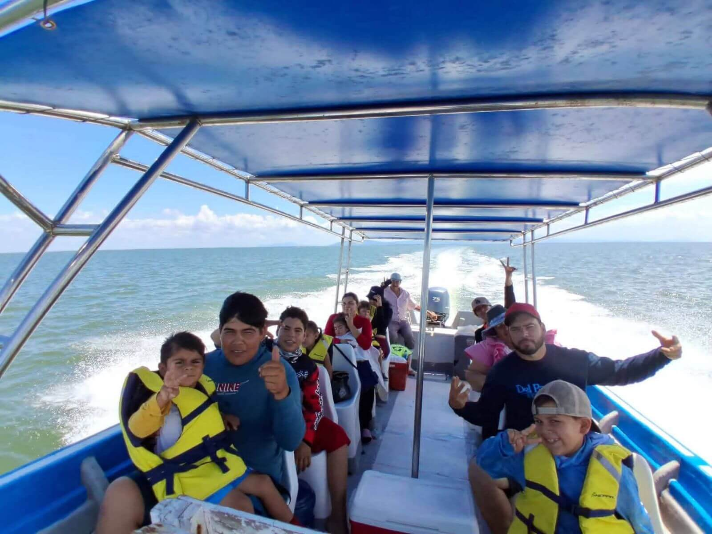
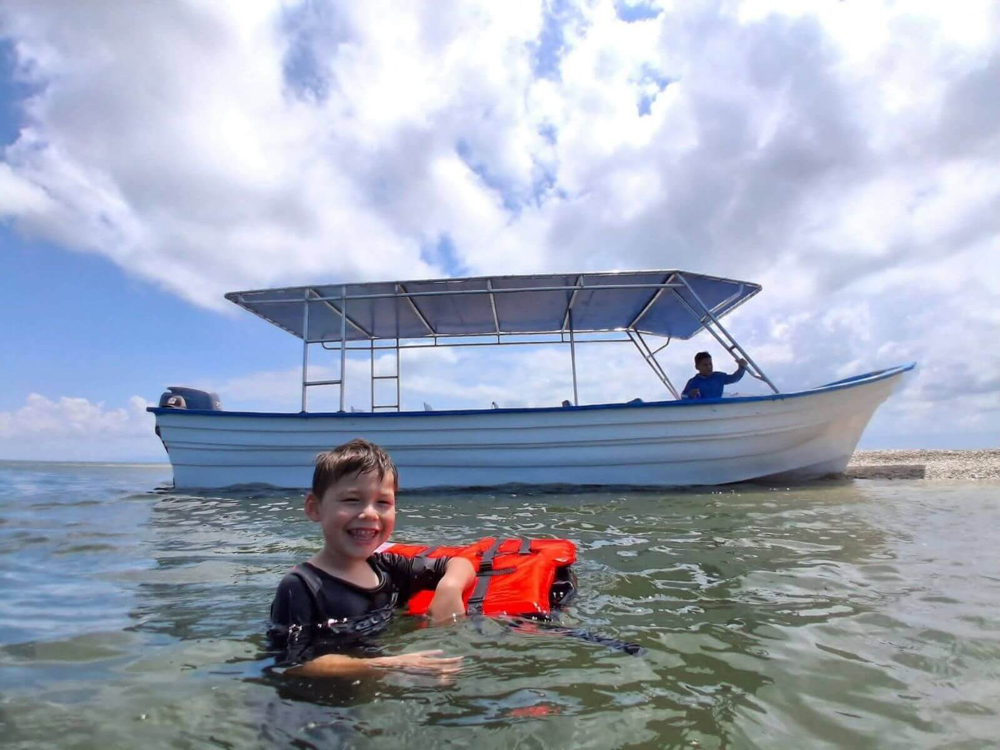
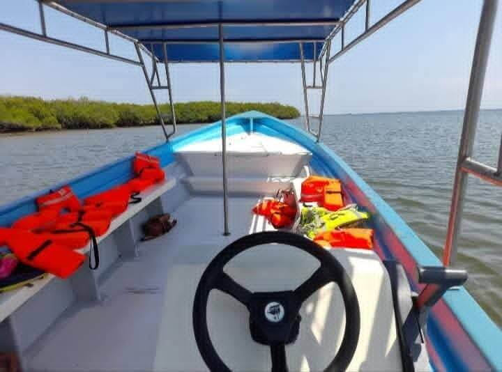

Tours exclusivos en panga por la Bahía Santa María. Naturaleza virgen y aventuras inolvidables en Costa Azul.
RESERVAR AHORADescubre el gigante de arena, dunas espectaculares y un horizonte infinito.
Un rincón tranquilo y romántico, ideal para disfrutar de la paz del mar.
Aguas cristalinas y arena blanca. El spot fotográfico más deseado de la bahía.
Observa la biodiversidad en su máximo esplendor en nuestras zonas de anidación.
Un encuentro único con la naturaleza virgen de nuestras marismas.
Historia y tradición náutica en un recorrido guiado por expertos locales.
Explora la belleza de Angostura con Altamura Tours






Estamos en Costa Azul, Angostura, Sinaloa. ¡Contáctanos directamente!
📞 697 729 5750